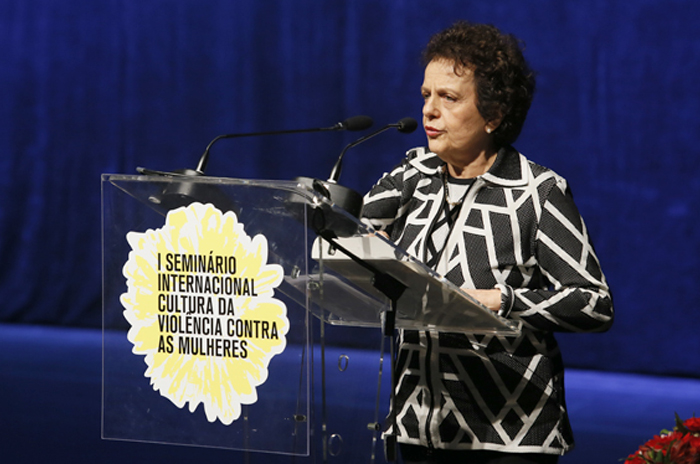
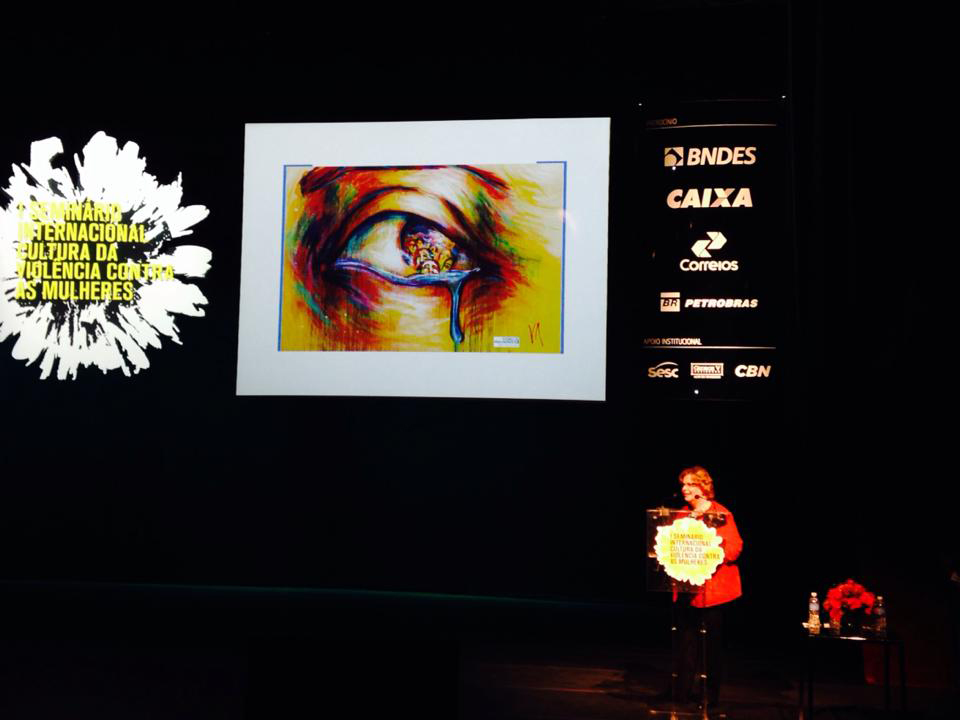
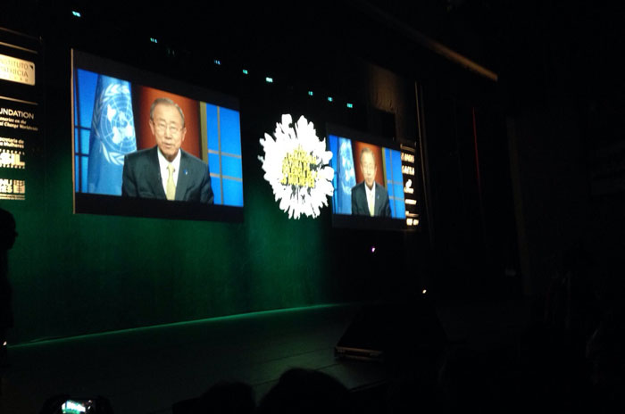

-
 Abertura do Iº Seminário Internacional Cultura da Violência contra as Mulheres que aconteceu no SESC Pinheiros nos dias 20 e 21 de maio de 2015 (Foto: Luciana Araújo)
Abertura do Iº Seminário Internacional Cultura da Violência contra as Mulheres que aconteceu no SESC Pinheiros nos dias 20 e 21 de maio de 2015 (Foto: Luciana Araújo)
-
 Jacira Melo, Diretora Executiva do Instituto Patrícia Galvão, fala na abertura do Seminário (Foto: Luciana Araújo)
Jacira Melo, Diretora Executiva do Instituto Patrícia Galvão, fala na abertura do Seminário (Foto: Luciana Araújo)
- Ivo Herzog, Diretor Executivo do Instituto Vladimir Herzog, um dos organizadores do Seminário (Foto: Cesar Ogata/SECOM Prefeitura-SP)
- O Secretário Municipal de Direitos Humanos de São Paulo, Eduardo Suplicy (Foto: Cesar Ogata/SECOM Prefeitura-SP)
-  A Ministra da Secretaria de Políticas para as Mulheres, Eleonora Menicucci discursou na abertura do Seminário e leu carta da Presidente Dilma Rousseff para o evento (Foto: Cesar Ogata/SECOM Prefeitura-SP)
-  Nadine Gasman, representante da ONU Mulheres no Brasil (Foto: Ana Emília Brasil)
-  O Diretor Geral da ONU, Ban Ki-moon enviou mensagem em vídeo para os participantes do evento (Foto: Luciana Araújo)